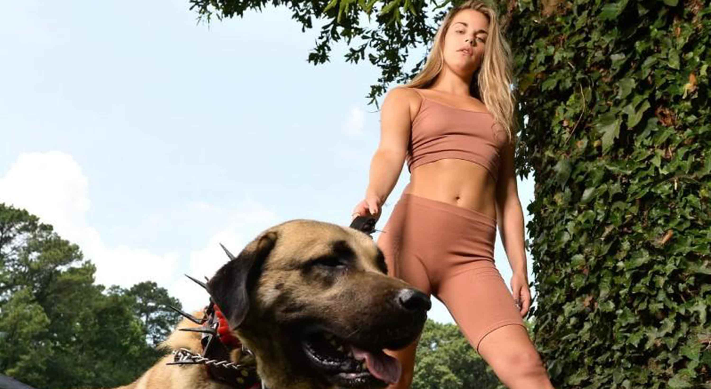

<ion-content [fullscreen]="true" [scrollEvents]="enableScroll"
(ionScrollStart)="logoFullAnim.play()">
  <ion-grid class="ion-no-padding ion-no-margin">
    <ion-row class="ion-no-padding ion-no-margin">
      <ion-col class="ion-no-padding ion-no-margin">
        <div class="logo-container">
          
        </div>
        <!-- <div class="social-container">
          <ion-fab horizontal="start" vertical="top" slot="fixed">
            <ion-fab-button size="small" color="secondary">
              <ion-icon name="share-social-outline"></ion-icon>
            </ion-fab-button>
            <ion-fab-list side="start">
              <ion-fab-button><ion-icon name="logo-facebook"></ion-icon></ion-fab-button>
              <ion-fab-button><ion-icon name="logo-instagram"></ion-icon></ion-fab-button>
            </ion-fab-list>
          </ion-fab>
        </div> -->
        <ion-toolbar>
          <ion-buttons slot="end">
            <ion-menu-button></ion-menu-button>
          </ion-buttons>
        </ion-toolbar>
        <ion-slides [options]="slideOpts" pager="false">
          <ion-slide>
            <!-- <div class="slide-text">
              <span class="trueno-outline-h1">FOUNDATION KANGALS</span><br>
              <span class="trueno-h1">By Foundation Farms Atlanta</span>
            </div> -->
            
          </ion-slide>
          <ion-slide>
            <!-- <div class="slide-text">
              <span class="trueno-outline-h1">FOUNDATION KANGALS</span><br>
              <span class="trueno-h1">By Foundation Farms Atlanta</span>
            </div> -->
            
          </ion-slide>
          <ion-slide>
            <!-- <div class="slide-text">
              <span class="trueno-outline-h1">FOUNDATION KANGALS</span><br>
              <span class="trueno-h1">By Foundation Farms Atlanta</span>
            </div> -->
            
          </ion-slide>
          <ion-slide>
            <!-- <div class="slide-text">
              <span class="trueno-outline-h1">FOUNDATION KANGALS</span><br>
              <span class="trueno-h1">By Foundation Farms Atlanta</span>
            </div> -->
            
          </ion-slide>
        </ion-slides>
      </ion-col>
    </ion-row>
    <!-- BEGINNING OF FK -->
    <ion-row>
      <ion-col size="12" class="ion-text-center ion-align-self-center ion-padding">
        <h1 class="white-background">Beginning of Foundation Kangals</h1>
      </ion-col>
    </ion-row>
    <ion-row class="ion-no-margin">
      <ion-col size="12" class="gray-background">
        <ion-row class="ion-padding">
          <ion-col size-xs="12" size-sm="12" size-md="6" class="ion-align-self-center">
            
          </ion-col>
          <ion-col size-xs="12" size-sm="12" size-md="6" class="ion-align-self-center ion-padding">
            <ion-row>
              <ion-col size="12">
                <p>
                  It started April 2020, when I decided to foster Cujo. Owning horses and livestock most of my life, 
                  I was never much of a dog person. I liked them, but they seemed like more responsibility 
                  than owning 5 horses, crazy as that sounds!
                </p>
                <p>
                  Long story short, Cujo gave me NO CHOICE. He laid in front of my truck until I 
                  put him in the back covered in fleas. Standing 6 feet tall and even under weight, Cujo still weighed around 180 lbs. 
                  Well, this over size wolf now had QUICKLY stole my entire heart, my land, and my home.
                </p>
              </ion-col>
              <ion-col size="12">
                <p>
                  They say Kangal is hard to train and I can see why. Some days are full with guests 
                  here on The Farm - kids camps, some rehab for special needs, and of course having family and friends around.
                  Having friends and family over, from elderly to children, the Kangal ALWAYS know who 
                  is friend or foe. They only bark or act aggressive to people that are here with no invitation 
                  or appointment. I'm not sure how they read my schedule...BUT THEY KNOW. Kangal are the most 
                  lovable family dogs, until its time to protect.</p>
                <p>
                  For more information refer to 
                  <a href="https://en.m.wikipedia.org/wiki/Kangal_Shepherd_Dog" target="_blank">
                    this article under SIVAS KANGAL in Wikipedia.</a>
                </p>
              </ion-col>
            </ion-row>
          </ion-col>
        </ion-row>
      </ion-col>
    </ion-row>
    <!-- END OF BEGINNING OF FK -->
    <!-- CODE OF ETHICS-->
    <ion-row>
      <ion-col size="12" class="ion-text-center ion-align-self-center ion-padding">
        <h1 class="white-background">Code of Ethics</h1>
      </ion-col>
    </ion-row>
    <!-- END OF CODE OF ETHICS -->
    <!-- HONOR OF THE BREED -->
    <ion-row>
      <ion-col size="12" class="ion-text-center ion-align-self-center ion-padding">
        <h1 class="white-background">Honor of the Breed</h1>
      </ion-col>
    </ion-row>
    <!-- END OF HONOR OF THE BREED -->
    <!-- NAVIGATION TO OTHER PAGES -->
    <ion-row>
      <ion-col size-xs="12" size-sm="12" size-md="6" size-lg="6" size-xl="6">
        <ion-card class="menu-card" tappable (click)="goToAboutKangals()">
          <ion-header class="menu-header">
            <ion-card-title class="menu-card-title">About Kangals</ion-card-title>
              
          </ion-header>
          
        </ion-card>
      </ion-col>
      <ion-col size-xs="12" size-sm="12" size-md="6" size-lg="6" size-xl="6">
        <ion-card class="menu-card" tappable (click)="goToPurchaseKangals()">
          <ion-header class="menu-header">
            <ion-card-title class="menu-card-title">Purchase Kangals</ion-card-title>
              
          </ion-header>
          
        </ion-card>
      </ion-col>
    </ion-row>
    <!-- END OF NAVIGATION TO OTHER PAGES -->
    <app-footer></app-footer>
  </ion-grid>
</ion-content>
